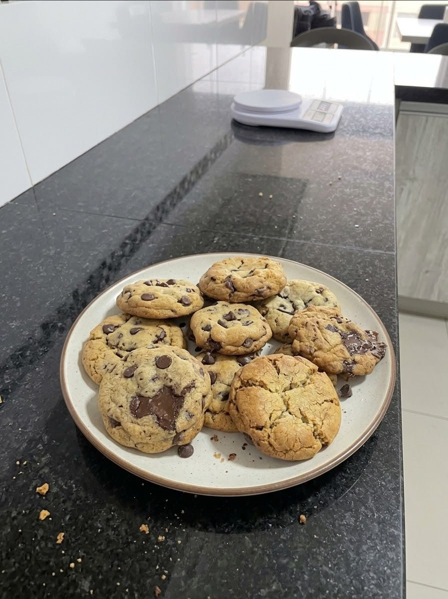
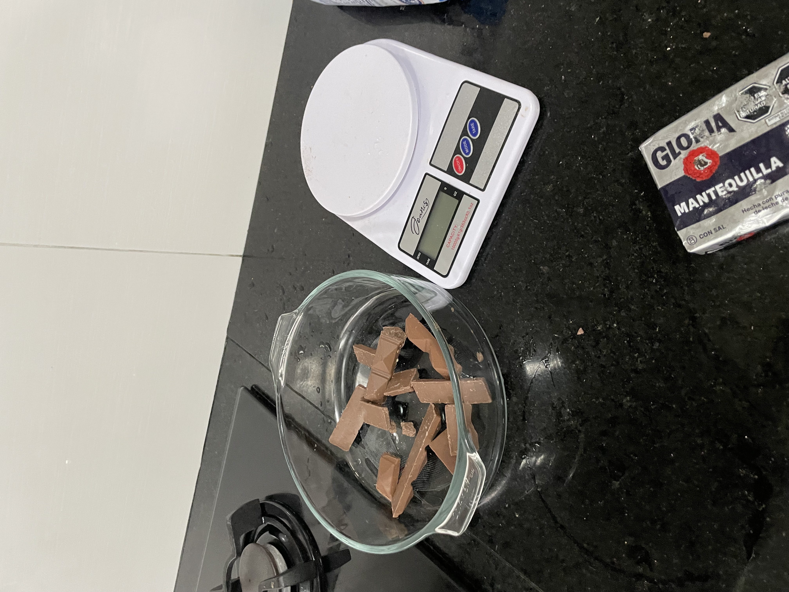
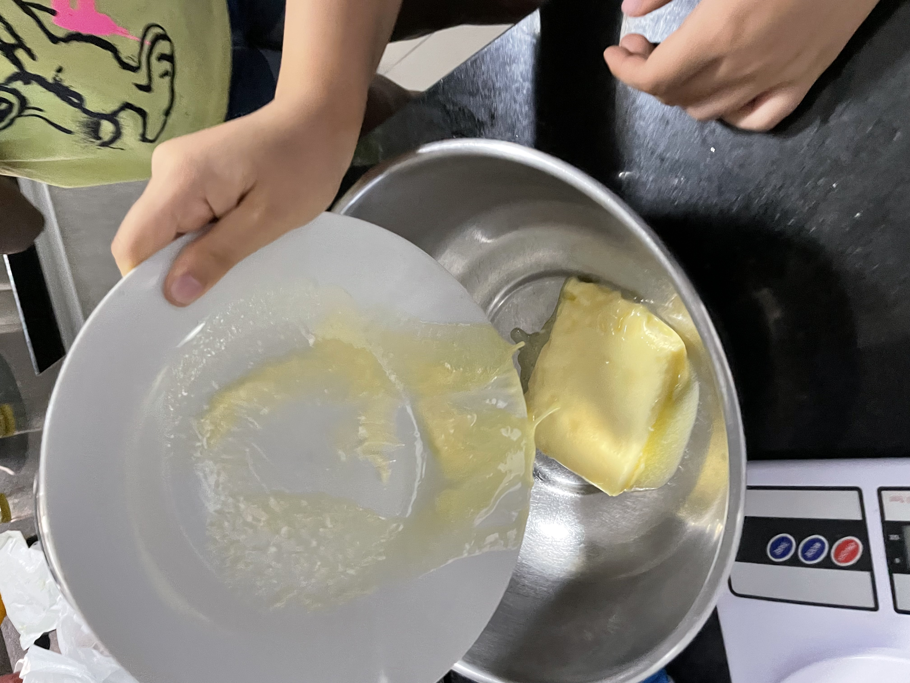
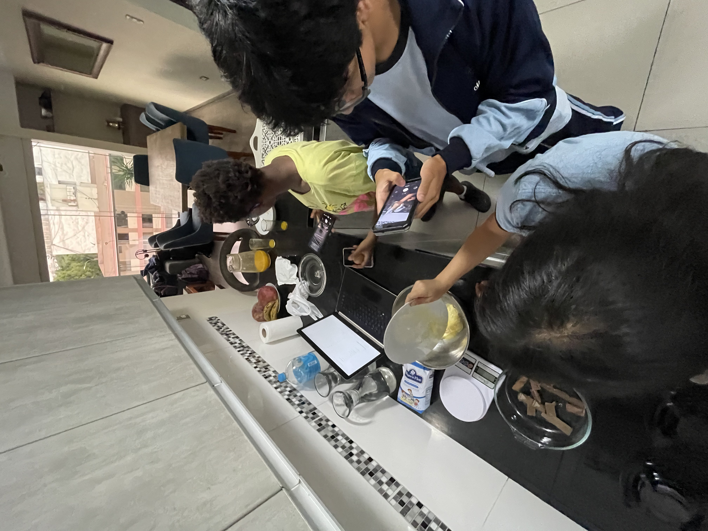
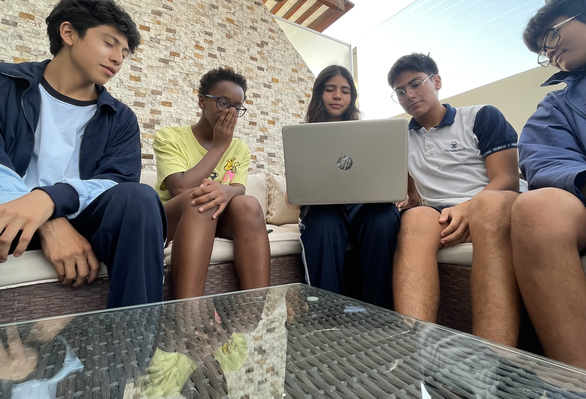
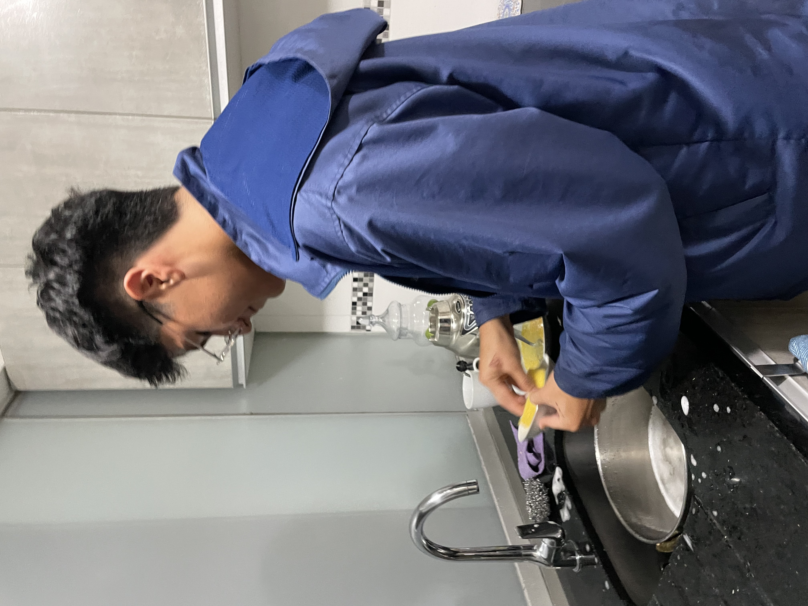
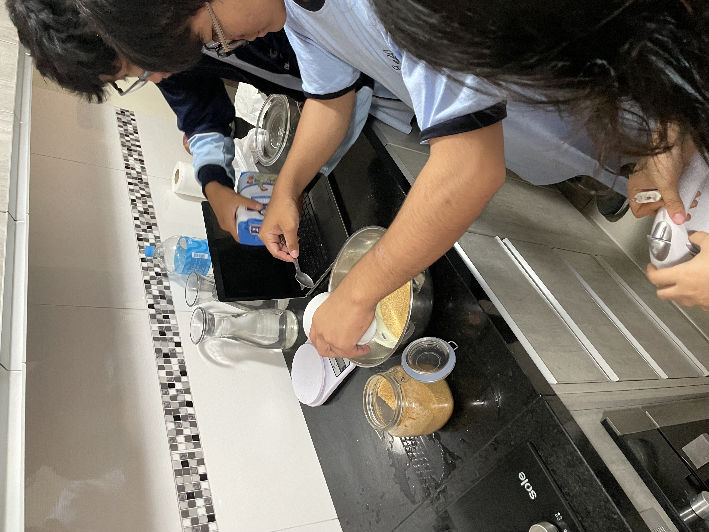
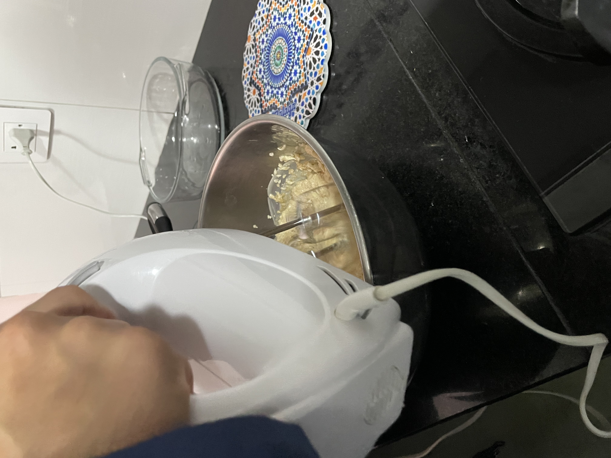

Creatividad, Actividad y Servicio




Mi primera vez en la cocina (y no se quemó nada)
Para mi primera experiencia CAS decidí aprender a hacer galletas con chips de chocolate. La verdad es que nunca había cocinado nada en mi vida, ni siquiera me había animado a entrar a la cocina, así que cuando lo elegí sabía que iba a ser un reto. Lo hice junto con unos amigos del colegio en la casa de uno de ellos, un sábado en la tarde.




Antes de empezar a hacer las galletas, lo primero que hicimos fue investigar bien para no fallar en el intento. Como ninguno de nosotros tenía experiencia en repostería, sabíamos que necesitábamos guiarnos de algo confiable.
Nos sentamos todos juntos con una laptop y empezamos a ver videos en YouTube de recetas de galletas con chips de chocolate. Vimos varios canales hasta que encontramos uno que explicaba bien paso a paso. También leímos algunos blogs de cocina para comparar las cantidades de los ingredientes y asegurarnos que la receta era buena.
Durante la indagación descubrí cosas que no sabía, como por ejemplo que existen diferentes tipos de azúcar (rubia, blanca, glass) y que cada una le da un sabor distinto a las galletas. También aprendí que hay que precalentar el horno antes de meter las galletas. Anotamos todo en una hoja para no olvidarnos. Esta etapa fue clave porque nos dio confianza para empezar sabiendo lo que íbamos a hacer.
Después de investigar, pasamos a la fase de preparación. Hicimos una lista de todo lo que necesitábamos: mantequilla Gloria, chocolate en barra, harina, azúcar rubia, huevos, esencia de vainilla, polvo de hornear y sal. Como en la casa no había algunos ingredientes, nos repartimos quién iba a traer cada cosa.
El día de la actividad, llegamos temprano a la casa de mi amigo y empezamos por organizar todo. Sacamos los utensilios que íbamos a usar: la balanza electrónica para pesar con precisión, la batidora eléctrica, los bowls grandes y chicos, las cucharas, la bandeja para el horno y el papel manteca.
También nos pusimos de acuerdo en los roles: una persona se encargaba de pesar los ingredientes, otra de derretir el chocolate y la mantequilla, otra de mezclar y yo me ofreci para usar la batidora. Lavamos bien las manos, nos remangamos y limpiamos la mesa de la cocina antes de empezar. Tener todo preparado y organizado antes de comenzar nos ahorró mucho tiempo y evitó que estuviéramos corriendo de un lado a otro buscando cosas.
Llegó el momento de la acción, que era la parte que más nervios me daba pero también la más emocionante. Empezamos pesando el chocolate en la balanza y partiéndolo en trozos pequeños para que se derritiera más rápido. Lo pusimos en un bowl junto con la mantequilla y lo derretimos a baño maría, que básicamente es poner un bowl encima de una olla con agua caliente para que el calor sea suave y no se queme.
Mientras eso se derretía, otros compañeros pesaban la harina, el azúcar y los demás ingredientes secos. Cuando todo estuvo listo, mezclamos los ingredientes húmedos con los secos en un bowl grande. Aquí vino mi parte: agarrar la batidora eléctrica y batir todo hasta que quedara una masa uniforme. Al principio salía un poco de polvo de harina por todos lados jaja, pero después le agarre la mano.
Cuando la masa estuvo lista, le agregamos los chips de chocolate y la mezclamos con una cuchara. Luego formamos bolitas pequeñas con las manos y las pusimos en la bandeja con papel manteca, dejando espacio entre cada una para que no se peguen al hornearse. Las metimos al horno (que ya habíamos precalentado) durante unos 12 minutos. Mientras se horneaban, aprovechamos para empezar a lavar los utensilios sucios. Cuando las sacamos, la cocina olía increíble y vimos que las galletas habían salido doradas y perfectas. Al final no nos las comimos todas: separamos una parte y la compartimos con nuestras familias.
¿Qué aprendí? Aprendí que cocinar, especialmente la repostería, es mucho más difícil de lo que parece. Hay que ser súper preciso con las medidas porque si te pasas de un ingrediente, todo cambia. También aprendí técnicas que nunca había escuchado, como lo del baño maría o batir la masa hasta que tenga "punto de letra". Ahora entiendo por qué mi mamá se demora tanto cuando cocina cosas dulces.
¿Cómo me sentí? Al principio me sentí bien nervioso porque pensaba que iba a malograr todo. Tenía miedo de echar mucha harina o de que las galletas salieran quemadas. Pero cuando vi que mis amigos tampoco sabían bien lo que estaban haciendo, me relajé y empezamos a reírnos de los errores. Cuando abrimos el horno y vimos que las galletas habían salido bien, sentí una emoción súper genial, como de "wow, sí pude".
¿Qué desafíos enfrenté? El mayor reto fue mi propia inseguridad. Como nunca había cocinado, no me sentía capaz y todo el rato pensaba que iba a fallar. Otro desafío fue trabajar en equipo, porque al principio todos queríamos hacer lo mismo y nos chocábamos en la cocina. Tuvimos que aprender a organizarnos y darnos roles para que todo fluyera mejor. También fue difícil tener paciencia para esperar que la masa repose y que las galletas se horneen, porque ya queríamos probarlas.
¿Cómo contribuyó a mi crecimiento? Esta experiencia me ayudó a darme cuenta de que, si me animo, puedo aprender cosas nuevas que pensaba que no eran lo mío. Antes pensaba que la cocina no era para mí, pero ahora ya me animo a hacer cosas en casa de vez en cuando. También aprendí a valorar mucho más el trabajo de mi mamá, porque ahora entiendo lo difícil que es cocinar y dejar la cocina limpia después. En general me hizo sentir más independiente y capaz.
Preparación de la masa
El equipo investigando la receta antes de empezar
Pesando con precisión el chocolate en la balanza
Preparando los utensilios y limpiando el área
Derritiendo la mantequilla a baño maría
Midiendo la cantidad exacta de azúcar y harina
Trabajando en equipo y aprendiendo juntos
Batiendo la masa hasta lograr la consistencia perfecta
El resultado final: nuestras galletas con chips de chocolate recién horneadas
Porque fue un desafío de verdad: nunca había cocinado nada y pensaba que la cocina no era para mí. Aprendí cosas concretas que antes no sabía hacer, como pesar los ingredientes, derretir a baño maría, usar la batidora y organizarnos por roles. Y el resultado lo demuestra: las galletas salieron bien y ahora me animo a cocinar en mi casa.
Fue una sola tarde y seguimos una receta que encontramos en internet. Para llegar al 7 me hubiera gustado repetirlo yo solo, sin ayuda, o inventar mi propia versión de la receta para demostrar que de verdad aprendí y no solo seguí pasos.
Ingresa la contraseña para editar los porcentajes